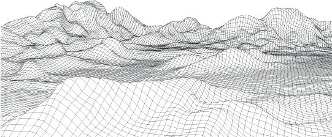
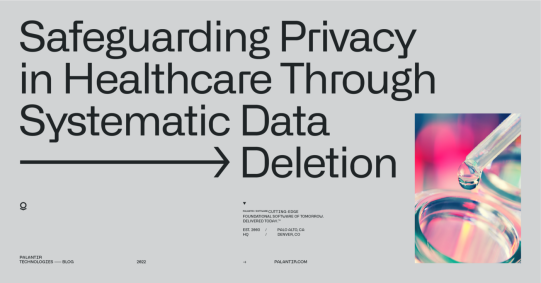

Palantir 与数据血缘和删除
自成立以来，Palantir 一直致力于在支持客户完成最重要任务的同时保护个人隐私。
播放视频
Palantir Foundry 中的细粒度血缘感知删除

凭借先进的数据血缘跟踪技术，无论规模或复杂程度如何，我们都能为政府和商业合作伙伴提供安全可靠的数据删除服务。
Foundry 开箱即用，具备数据血缘跟踪功能，可记录数据的每一次转换。这意味着，无论数据经历了什么变化或在平台中的最终位置如何，Foundry 都能帮助机构在整个系统中全面执行删除操作。

我们的血缘感知数据删除功能可帮助组织在不断变化的监管环境中履行合规义务。
各行业的组织使用 Palantir Foundry 作为其安全且可问责的基础设施，以最大化数据效用，同时确保数据的处理符合相关规则、法规和规范 数据隐私 的要求。
有兴趣进一步了解我们的数据血缘和删除功能？联系我们 →
请参阅我们的 隐私政策 以了解我们将如何处理此信息。